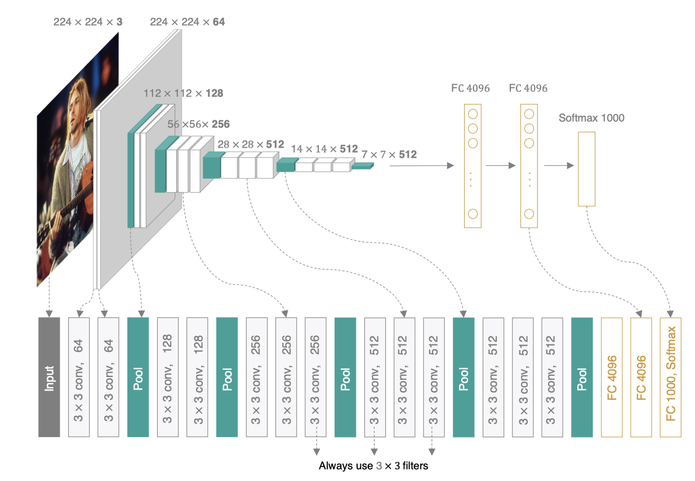

1.7 模型微调¶
学习目标
- 知道微调的原理
- 能够利用微调模型来完成图像的分类任务
1.微调¶
给定大规模数据集训练好预训练模型，基于该预训练模型进行微调。相对于从头开始训练，微调会省去大量计算资源和计算时间，提高了计算效率,甚至提高准确率。
微调由以下4步构成。
- 在源数据集（如ImageNet数据集）上预训练一个神经网络模型，即源模型。
- 创建一个新的神经网络模型，即目标模型。它复制了源模型上除了输出层外的所有模型设计及其参数。我们假设这些模型参数包含了源数据集上学习到的知识，且这些知识同样适用于目标数据集。我们还假设源模型的输出层跟源数据集的标签紧密相关，因此在目标模型中不予采用。
- 为目标模型添加一个输出大小为目标数据集类别个数的输出层，并随机初始化该层的模型参数。
- 在目标数据集（如鲜花数据集）上训练目标模型。我们将从头训练输出层，而其余层的参数都是基于源模型的参数微调得到的。

当目标数据集远小于源数据集时，微调有助于提升模型的泛化能力。
2.鲜花种类识别¶
我们还是以前面使用的鲜花种类识别的案例。将基于这个案例对在ImageNet数据集上训练好的VGG模型进行微调。获取鲜花识别的模型。
首先，跟前面的课程一样首先导入所需的工具包。
import torch
import torch.nn as nn
from torchvision import transforms
from torch.utils.data import DataLoader
from torchvision.datasets import ImageFolder
import torchvision.models as models
2.1 获取数据集¶
数据集的获取方式与前面课程中是一样的，也需要将图像的尺寸调整为224x224的大小
# 指定批次大小
batch_size = 8
# 指定数据集路径
flower_train_path = './dataset/flower_datas/train/'
flower_test_path = './dataset/flower_datas/val/'
# 先将数据转换为tensor类型，并调整数据的大小为224x224
dataset_transform = transforms.Compose([
transforms.ToTensor(),
transforms.Resize((224,224))
])
# 获取训练集数据和测试集数据
flower_train = ImageFolder(flower_train_path, transform=dataset_transform)
flower_test = ImageFolder(flower_test_path,transform=dataset_transform)
# 获取数据的迭代
train_loader = DataLoader(dataset = flower_train, batch_size = batch_size, shuffle = True)
test_loader = DataLoader(dataset = flower_test, batch_size = batch_size, shuffle = False)
2.2 微调模型的构建¶
我们使用在ImageNet数据集上预训练的Vgg-16作为源模型。torchvision小于等于0.12版本我们指定pretrain=True即可，大于0.12的指定weights来自动下载并加载预训练的模型参数，在第一次使用时需要联网下载模型参数。
torchvision中封装了很多重量级的网络架构，都有其对应的预训练模型，如下图所示：
利用预训练模型构架当前任务的网络架构，特征提取部分使用预训练模型的结构，输出端我们根据当前任务进行构建：

class VGG16_finetune(nn.Module):
def __init__(self, num_class=5):
super(VGG16_finetune, self).__init__()
# 获取预训练模型
# 0.12
vgg16_net = models.vgg16(pretrained=True)
# >0.12
# weights= models.VGG16_Weights.DEFAULT
# vgg16_net = model.vgg16(weights = weights)
self.num_class = num_class
# 获取预训练模型的特征和GAP的结果
self.features = vgg16_net.features
self.avgpool = vgg16_net.avgpool
# 构建当前任务的输出端：FC
self.classifier = nn.Sequential(
nn.Linear(25088, 512),
nn.ReLU(True),
nn.Dropout(),
nn.Linear(512, 128),
nn.ReLU(True),
nn.Dropout(),
nn.Linear(128, self.num_class),
)
# 前向传播过程
def forward(self, x):
x = self.features(x)
x = self.avgpool(x)
x = torch.flatten(x, 1)
x = self.classifier(x)
return x
进行模型实例化,并冻结卷积层部分的参数，不进行梯度计算
# 模型实例化
model = VGG16_finetune(num_class = 5)
# 冻结特征提取部分的参数，不进行梯度计算
for param in model.features.parameters():
param.requires_grad = False
# 学习率
learning_rate = 1e-3
# 训练轮数
num_epochs = 10
# 优化算法Adam = RMSProp + Momentum,在这里我们只更新后面的分类输出层的参数。卷积层的参数使用预训练模型的结果
optimizer = torch.optim.Adam(model.classifier.parameters(), lr=learning_rate)
# 交叉熵损失函数
loss_fn = torch.nn.CrossEntropyLoss()
2.3 模型训练¶
我们设置好网络之后，就可以像前面课程中一样进行模型的评估与训练，具体实现如下所示：
# 计算模型预测精度:测试集数据，模型
def evaluate_accuracy(data_iter, model):
total = 0
correct = 0
# 不进行梯度计算
with torch.no_grad():
# 模型是验证模式
model.eval()
# 获取每一个batch的数据，进行预测
for images, labels in data_iter:
outputs = model(images)
# 获取预测结果
_, predicts = torch.max(outputs.data, dim=1)
# 预测的次数
total += labels.size(0)
# 预测正确的个数
correct += (predicts == labels).cpu().sum()
break
# 获取准确率
return correct / total
# 定义模型训练过程:指定数据集，优化器，损失函数和轮次
def train(data_loader=train_loader,
optimizer=optimizer,
loss_fn=loss_fn,
epochs=num_epochs):
# 遍历每一个轮次进行训练
for epoch in range(epochs):
print('current epoch = {}'.format(epoch))
# 每一个轮次的损失，预测个数和预测正确个数的初始化
train_accuracy_total = 0
train_correct = 0
# 损失值的和
train_loss_sum = 0
# 迭代次数
iter = 0
for i, (images, labels) in enumerate(data_loader):
# 模型定义为训练模式
model.train()
# 对数据进行预测
outputs = model(images)
# 计算模型的损失
loss = loss_fn(outputs, labels)
# 在做反向传播前先清除网络状态
optimizer.zero_grad()
# 损失值进行反向传播
loss.backward()
# 参数迭代更新
optimizer.step()
# 求损失的和
train_loss_sum += loss.item()
# 输出模型预测结果
_, predicts = torch.max(outputs.data, dim=1)
# 获取训练集预测正确的个数
train_accuracy_total += labels.size(0)
train_correct += (predicts == labels).cpu().sum().item()
iter+=1
# 测试集预测的准确率
test_acc = evaluate_accuracy(test_loader, model)
print(
'epoch:{0}, loss:{1:.4f}, train accuracy:{2:.3f}, test accuracy:{3:.3f}'
.format(epoch, train_loss_sum / (iter+0.01),
train_correct / train_accuracy_total, test_acc))
print('------------finish training-------------')
调用train方法就可以进行网络的训练，训练结果如下所示：
current epoch = 0
epoch:0, loss:0.8777, train accuracy:0.670, test accuracy:0.799
time:1880.13265228271484
current epoch = 1
epoch:1, loss:0.4829, train accuracy:0.833, test accuracy:0.838
time:1647.77058219909668
current epoch = 2
epoch:2, loss:0.3613, train accuracy:0.881, test accuracy:0.843
time:1564.02652955055237
current epoch = 3
epoch:3, loss:0.2668, train accuracy:0.920, test accuracy:0.854
time:1372.08724927902222
current epoch = 4
epoch:4, loss:0.2407, train accuracy:0.923, test accuracy:0.832
time:1572.96699476242065
current epoch = 5
epoch:5, loss:0.1745, train accuracy:0.953, test accuracy:0.854
time:1553.9370255470276
current epoch = 6
epoch:6, loss:0.1862, train accuracy:0.947, test accuracy:0.849
time:1622.81787252426147
current epoch = 7
epoch:7, loss:0.1813, train accuracy:0.945, test accuracy:0.874
time:1795.26246666908264
current epoch = 8
epoch:8, loss:0.1563, train accuracy:0.957, test accuracy:0.857
time:1514.09582495689392
current epoch = 9
epoch:9, loss:0.1990, train accuracy:0.952, test accuracy:0.846
time:1587.1035635471344
------------finish training-------------
与未使用预训练模型相比，训练速度有所提升，在开始时的准确率也比较高一些。
总结
- 微调是目标模型复制了源模型上除了输出层外的所有模型设计及其参数，并基于目标数据集微调这些参数。而目标模型的输出层需要从头训练。
- 能够利用torch实现模型微调